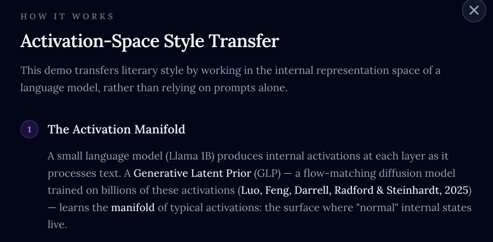
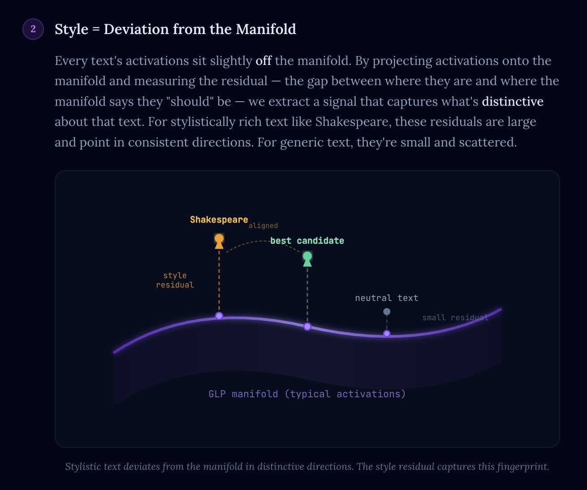
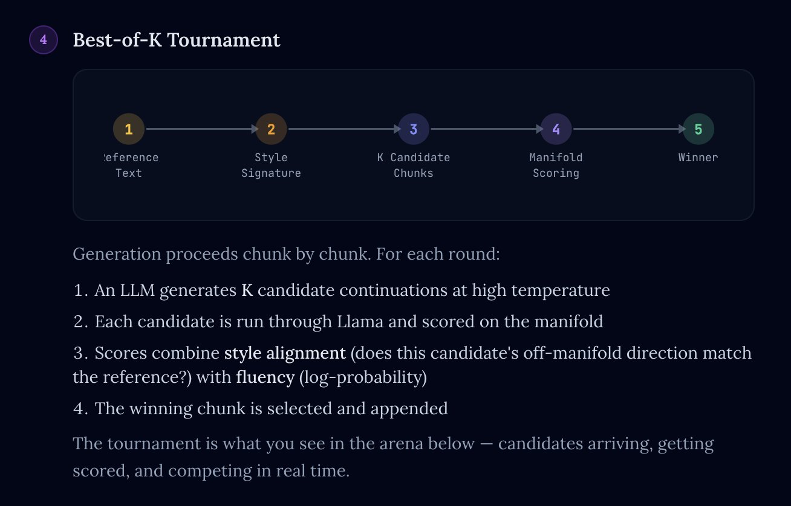

When you ask an LLM to "write like Shakespeare," it does something, but the result rarely feels like Shakespeare. Prompting gives you thematic cues — thee, thou, forsooth — but misses the deeper structural signature that makes a writer's prose distinctive.
This post describes a different approach: instead of telling a model about a style, we extract a geometric fingerprint of that style from the internal activations of a small language model, then use it to guide decoding. It works surprisingly well, and the mechanism is interesting: style lives in how a text's activations deviate from typical, not in what you can prompt for.
This project builds on the Generative Latent Prior (GLP) from Luo, Feng, Darrell, Radford & Steinhardt (2025). A GLP is a flow-matching diffusion model trained on billions of intermediate-layer activations from a language model. It learns the manifold of typical activations — the surface where "normal" internal states live.
The paper shows that this learned manifold is useful for steering LLM behavior: you can add a concept direction to activations and then use the GLP to project the result back onto the manifold, preserving semantic content while maintaining fluency. The authors demonstrate this for sentiment control, SAE feature steering, and persona elicitation.
I wanted to see if the same manifold could be used for something different: literary style transfer.

The core idea is simple. When you run text through Llama 1B, you get a 2048-dimensional activation vector at each token position (I use layer 7, the middle layer). These activations encode the text's content. But they also sit slightly off the GLP-learned manifold of typical activations.
By projecting activations onto the manifold (via the GLP's SDEdit-style denoising) and measuring the residual — the gap between where they are and where the manifold says they "should" be — we extract a signal that captures what's distinctive about that text.
For stylistically rich text like Shakespeare, these residuals are large and point in consistent directions. For generic text, they're small and scattered. The residual is the style fingerprint.

Stylistic text deviates from the manifold in distinctive directions. The style residual captures this fingerprint.
In practice, extracting a usable style signature requires a few refinements beyond raw residuals:
The result is a compact fingerprint: the directions in 2048-dimensional activation space that characterize a particular author's style.
With a style signature in hand, we use it to guide generation from a separate, larger LLM (Gemini, Claude, or GPT). Generation proceeds chunk by chunk in a tournament:

I built an interactive demo that visualizes this tournament in real time. You select a literary work as the style reference, write a prompt, and watch candidates arrive, get scored against the manifold, and compete. The recording below shows the system generating text in the style of Shakespeare's Hamlet:
The style transfer tournament in action. Candidates are generated, scored against Shakespeare's activation signature, and the winner is selected each round.
The demo runs on a Modal T4 GPU serving both the Llama 1B + GLP inference pipeline and a React frontend over WebSocket. Source authors include Shakespeare, Tolkien, T.S. Eliot, Dickinson, Melville, Wilde, and others.
Subjectively, yes — maybe 8 out of 10 times the steered text gets meaningfully closer to the source style than a prompted-only baseline. The effect is most pronounced for authors with strong, distinctive voices (Shakespeare, Hopkins, Melville) and less dramatic for more neutral prose styles.
But the more interesting observation is what's working. We're using the activation manifold of Llama 3.2 1B — a small model — to guide decoding, and the stylistic vocabulary it captures is surprisingly rich. The models seem to learn detailed stylistic structure from pretraining, but it lives primarily in how activations deviate from typical. The activation manifold may be more information-dense than we generally appreciate.
The original GLP paper focuses on steering and probing — adding concept directions to activations and using the GLP to keep them on-manifold. Style transfer is a different application of the same manifold: instead of adding a known direction, we extract an unknown direction from a reference text and use it as a scoring criterion during generation.
This is closer in spirit to the paper's probing results, where GLP meta-neurons isolate interpretable concepts. The style signature is, in some sense, a high-dimensional "probe" of the manifold that captures what makes a text distinctive.
The GLP paper is available at arXiv:2602.06964, and the project page is at generative-latent-prior.github.io.